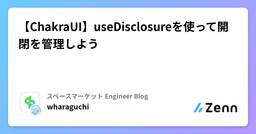

スペースマーケット Engineer Blogのフィード
https://zenn.dev/p/spacemarket
スペースを簡単に貸し借りできるサービス「スペースマーケット」のエンジニアによる公式ブログです。 弊社採用技術スタックはこちら -> https://www.whatweuse.dev/company/spacemarket
フィード
Fog側をモックしたらCarrierWaveのUploaderインスタンスを作らずに済む話
スペースマーケット Engineer Blogのフィード
はじめにこんにちは。スペースマーケットでWebエンジニアしてます、新卒のdumbled0reです。7月にチームに入ってから早5ヶ月が経ち、少しずつスクラム開発に慣れてきた今日この頃です。今回はAWSやGCPなどのクラウドストレージにファイルをアップロードするときのテストでFog側をモックすれば、テスト時に毎回CarrierWaveのUploaderインスタンスを作成しなくても済むよというお話です。 CarrierWaveとFogの概要 CarrierWaveとはCarrierWaveはRuby on Railsアプリケーションでファイルを簡単にアップロードできるライブ...
1日前

【ChakraUI】useDisclosureを使って開閉を管理しよう
スペースマーケット Engineer Blogのフィード
こんにちは！スペースマーケットでフロントエンドエンジニアをしているwharaguchiです。先日Chakra UIのuseDisclosureという便利なカスタムフックを知ったので、今回はそちらの紹介記事になります。 Chakra UIのuseDisclosureとはuseDisclosureは、Chakra UIが提供しているオープンやクローズの状態を管理するカスタムフックです。自前でuseStateなどを用意しなくても、useDisclosureを使うことで開閉管理を行うことができます。V3のuseDisclosureからは、以下の値が返ってきます。値型説明...
3日前

休職して将来に不安を感じたエンジニアの末路
スペースマーケット Engineer Blogのフィード
おはようございます、こんにちは、こんばんは。スペースマーケットでWebエンジニアをしています、s0arです。さむい ふゆ今回は休職中にどうしようもなく将来への不安に苛まれたエンジニアの雑記です。きちんとしたいわゆる「キャリア論」とかそういうのではありません。これが「リアル」だよねってことで何卒。同じような不安を抱えたことのある、もしくは現在進行系で抱えている方へ、何らかの参考になれば幸いです。 俺はこういう人間だ社会人11年目（社会人歴=エンジニア歴）書いててマジかよってなってるWindowsエンジニア → Webエンジニアそこそこなんやかんやできはする、で...
10日前
公式ドキュメントをみながら、初心者なりにElasticsearchハンズオン！
スペースマーケット Engineer Blogのフィード
みなさんこんにちは！株式会社スペースマーケットでエンジニアをしているrokioです☺️弊社では、15分単位でスペースを貸したい方とそのスペースを使いたい方をマッチングするサービスを提供しています。2024年12月現在36,000超のスペースを掲載しており、それを素早く検索するためにElasticsearchを導入しています。約2ヶ月前にこの会社にWebエンジニアとしてJoinしたのですが、Elasticsearchは名前だけは聞いたことがあるものの、実際に触ったことがなく😅、メンバーの方々に教えてもらいながらキャッチアップし少しずつElasticsearch関連のタスクができるように...
15日前
【Ruby on Rails】eager_loadって何だろう
スペースマーケット Engineer Blogのフィード
はじめにこんにちは！気づいたら今年ももう終わりますね！社会人になってから時間が高速で進んでる気がしてるのは僕だけでしょうか？時を高速で進めてる人という事で最近バックエンドのコードを触る機会が増えてきたのですが、Railsのコードを読んでてた際に出てきたeager_loadというものが何か分からなかったので調べてみました。 N+1問題とはeager_loadの説明の前に、まずN+1問題の話をします。関連データを取得するたびにクエリが発行されることで、余分なクエリが発生し、パフォーマンスに影響が出ることです。userモデルとpostモデルがあり以下のようなアソシエーシ...
20日前
Elasticsearchの絞り込みと並び替えでイケイケな検索結果を得る
スペースマーケット Engineer Blogのフィード
はじめにElasticsearchを使っているが要件を満たす検索結果を実現するにはどうすればいいかわからない、、またはElasticsearchを使ってみたいが勝手がわからない、、などのお悩みあると思います。具体例を交えて絞り込みと並び替えの基本を紹介していきたいと思います。 Elasticsearchはどうやって絞り込み、並び替えをしている？絞り込みですが、queryとfilterで絞り込みができます。queryには色々な種類がありますが基本的なものとしてBoolean queryのmust句、should句、must_not句があります。今回はこれらのクエリについて紹...
23日前
【スプレッドシート×GAS】シートのデータをもとにSQLクエリを生成する方法
スペースマーケット Engineer Blogのフィード
こんにちは、WebエンジニアのShotaです。ある業務でスプレッドシートで管理されているデータをDBへ移行する必要があり、GASを実装しました。今回はGASを使ってシートのデータからSQLクエリを生成する処理をご紹介します！ GASとはGoogle Apps ScriptとはGoogle Workspaceアプリと連携可能なアプリケーション開発プラットフォームです。JavaScriptで記述可能で、スクリプトファイルの拡張子は「.gs」です。インストール不要でブラウザにコードエディターが用意されているので、とても気軽に開発できます。今回はスプレッドシートの表データを整形、...
1ヶ月前
TypeScriptによるDependency Injection入門：DIコンテナを自作して内部構造を理解する
スペースマーケット Engineer Blogのフィード
はじめに私は初めてDependency Injection（依存性注入）という概念に出会ったのは、NestJSのドキュメントを読んでいるときでした。その時、providerや@Injectable()は何なのか？といった素朴な疑問を感じましたが、ドキュメントを読んでもすぐには理解できず、そのまま一度放置しました。最近、業務で触れているAPIサービスではNestJSではなく、InversifyJSというライブラリを使用してDependency Injectionを実装しています。これを機に、DIについてもう一度学び直すことにしました。そして、自分が調べて理解したことをまとめて共有し...
1ヶ月前
FastlyYamagoya2024 イベントレポート
スペースマーケット Engineer Blogのフィード
こんにちは、エンジニアリングマネージャーをやっている dera です。2024年11月6日に開催された、FastlyYamagoya2024 にチームの有志メンバーで参加してきました！こちらのイベントレポートになります。https://learn.fastly.com/Yamagoya2024.html FastlyYamagoya2024とはFastlyのエンジニアやCSの方や、利用している他社さんが集まってのイベントで、Fastlyの最新情報や製品の使い方、事例などを学ぶことができるイベントです。スペースマーケットでは主にCDNにFastlyを利用しているので、情報の...
1ヶ月前
reduceを使って日付一覧から日毎の情報を作成する
スペースマーケット Engineer Blogのフィード
こんにちは！スペースマーケットでフロントエンドエンジニアをしているwharaguchiです。これまで個人的に使用機会が少なかったreduceを使う機会があったため、自分の備忘録を兼ねて記事にしました。 やりたかったこと携わっていた施策で以下のキャプチャのような、日付毎にアコーディオンが開閉するUIを作成する必要がありました。APIから返ってくるデータは、以下のような各日付の情報が一覧で格納された配列でした。// 元となるデータconst baseData = [ { startedAt: "2024-10-30T10:00:00+09:00", ro...
1ヶ月前
マークダウンからTypeScriptの型を生成してみた
スペースマーケット Engineer Blogのフィード
こんにちは、スペースマーケットでフロントエンドエンジニアをしている8zkです。マークダウンからTypeScriptの型を生成するscriptを新規プロジェクトで書いたのでそれを説明を交えて紹介したいと思います。新規プロジェクトでは開発納期やBEの技術選定前にFEの技術選定をしたことなどの兼ね合いで、GraphQLやtRPC,gRPCではなくシンプルなREST APIを採用しました。それゆえにクライアントで使うAPIの型をどのように生成するかを考えていたのですが、バックエンドエンジニアが先んじてテーブル定義書をマークダウンで書いていたため、それを元に型を生成するscriptを書くこと...
2ヶ月前
スペースマーケット、宣言的スキーマ管理はじめるってよ
スペースマーケット Engineer Blogのフィード
はい、ということでこれまでスペースマーケットでは ActiveRecord マイグレーションを使って差分によるマイグレーションを行ってきたのですが、これからは スキーマのあるべき形を管理 するようにしますよというお話です！ 宣言的スキーマ管理とはCREATE TABLE `users` ( `id` int(11) NOT NULL AUTO_INCREMENT, `email` varchar(255) NOT NULL DEFAULT '', `name` varchar(255), PRIMARY KEY (`id`))というユーザーテーブルがあり、ここに...
2ヶ月前
コンテナイメージを使用してpuppeteerをAWS Lambdaで動かす
スペースマーケット Engineer Blogのフィード
こんにちは。株式会社スペースマーケットでフロントエンドエンジニアをしておりますwado63です。puppeteerをコンテナイメージを使ったlambdaで動かそうとした際にかなり苦戦したので、その際のtipsを共有できればと思います。AWS, Lambda, Puppeteer, Dockerをそれぞれ使ったことあるような方向けの記事となっておりますのでご了承ください。 ざっくりまとめMacのarm64環境でdocker buildしてpuppeteerは動かせますがversion指定が行いづらいchromeはimageを小さくするためにchrome-headless-sh...
2ヶ月前
GoogleMapsComposeのMarkerComposableを使ってみる
スペースマーケット Engineer Blogのフィード
0. はじめにスペースマーケットのAndroidニキことseoです。JetpackComposeが浸透して時間が経ちます。Compose創世記からXMLからの置き換えを進めている方々は、当時のComposeの技術ではこれは実現できなさそう・めんどくさそうだな、と後回しにした箇所があったりしないでしょうか？今回は、「あのときあきらめた、あれ、あるよ」という話です。地図を扱うアプリの場合、GoogleMapsComposeは必ず採用しているかと思います。ちょうど1年前の23年8月ごろにv2.14.0よりMarkerComposableが追加されました！弊社スペースマーケ...
3ヶ月前
Live Activityによるスペース利用時間の延長促進機能
スペースマーケット Engineer Blogのフィード
こんにちは、スペースマーケットでモバイルエンジニアをしている村田です。以前投稿した記事【アプリエンジニアがプロダクトをグロースさせる施策立案】に続き、今回はスペースの利用時間をスムーズに延長するための機能について考え、施策を立案しました。iOSならではのLive Activityを活用した機能を実装しましたので、開発時に直面した課題も含め本記事で紹介します。 Live Activityとはロック画面やDynamic Islandに、アプリの最新情報を表示する機能で、ユーザーがリアルタイムの情報を一目で確認し、関連するアクションを素早く実行できるようにします。例えばUberEa...
4ヶ月前
バッチ処理の仕様そのものを見直したら200倍超えの爆速化を果たした話
スペースマーケット Engineer Blogのフィード
5月のとある昼下がり、社内で運用されている請求管理系のバッチ処理においてメモリ使用率の上昇にともない途中で異常終了してしまう問題が発生しました。最初はコードそのものを改善できないか考えていたのですが、だんだんと仕様自体を見直したほうがいいのでは？と思うようになり、結果的に2時間超かかって異常終了していたバッチを30秒程度へ爆速化できたので、その内容を共有したいと思います。 アラートはいつも突然にスペースマーケットではバックエンドに Ruby on Rails を採用しており、バッチ処理も Rakeタスク で実行しているものが多くあります。今回のバッチも Rakeタスク で実行さ...
4ヶ月前
300万以上のURLをキャッシュを活かして効率よくリダイレクトさせた話
スペースマーケット Engineer Blogのフィード
こんにちは。株式会社スペースマーケットでフロントエンドエンジニアをしておりますwado63です。少し前ですが、SEOの施策として300万以上のURLを新ページにリダイレクトさせるという対応を行いました。SEOの話はSearch Centralのドキュメントに書いてあること以上の話は正確な答えがない分野なので、ここではリダイレクトに使用した技術に絞って書きたいと思います。 今回取り組んだ課題スペースマーケットでは/features/tv/cities/fujisawa-shi--kanagawa/stations/1130108//search/space_types/r...
6ヶ月前
スクラム開発において、短期間で成果を出す為にチームで工夫してること
スペースマーケット Engineer Blogのフィード
はじめにこんにちは！先日、僕が通っているキックボクシングジムのトレーナーが試合に出るということで、観戦に行ってきました！トレーナーの方がRISEというK-1に並ぶレベルの団体のランカーということもあり、ハイレベルな試合でした！リンクを貼っておくのでよかったらチェックしてみてください🙋https://rise-rc.com/fighter/fujii_shigeki/ということで本題に入ります！ 短期間で成果を出すために工夫してること弊社では昨年の6月から本格的にスクラム開発を行っています。弊社のスクラム開発に関しては、noteで記事を公開しているので、詳しくはこち...
6ヶ月前
スペースマーケット「テックサロン」始めました
スペースマーケット Engineer Blogのフィード
こんにちは、スペースマーケットでモバイルエンジニアをしている村田です。スペースマーケットは「チャプター活動」というメンバーのスキル向上と技術負債の返済を目的としたエンジニア制度を導入し、約1年間運用してきました。その中でいくつかの課題を感じ、2024年の初めから内容を大幅に変更し、名称も「テックサロン」に改めて活動を開始しました。本記事では、テックサロンの目的と取り組み内容について、運営側の視点から共有したいと思います。※ チャプター活動については以下記事をご覧くださいhttps://note.com/narihara/n/n9e84e31fb967 チャプター目的の再定義...
6ヶ月前
SWRを使って型定義されたhooksを書いてみる（POST, PUT, DELETE編）
スペースマーケット Engineer Blogのフィード
こんにちは。最近暑くてホットコーヒーが飲めない季節になってきたなぁと感じています。8zkです。この記事の前にGET編も書きましたので、よければそちらから見ていただくとわかりやすいかと思います。というわけで今回は採用理由とSWRとはは割愛させていただきます。前回と同様にfetcherが必要なので以下のように定義します。// /src/helpers/fetcher.tsimport axios from 'axios';export const fetcher = axios.create({ baseURL: 'https://jsonplaceholder.typi...
6ヶ月前